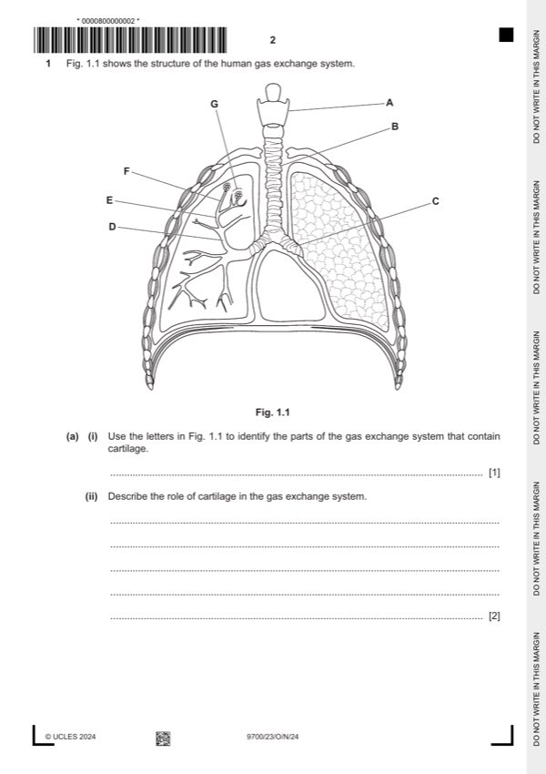

Question 1

Original paper page 2
Part 1(a)(i) — solution
B and C ; Accept A, B and C 1
if any other letters do not award the mark, ignore names
Mark points
- Include the ideas shown in the solution above.
Part 1(a)(ii) — solution
any two from: 2
keeps the (named) airway(s) open / prevents collapse of airways ; AW R bronchiole / alveoli
e.g. to allow free flow of air into and out of, airways / lungs
e.g. provides support (for the named airway(s)) I ‘provides strength’
allows flexibility ; A described e.g. bending neck, swallowing food
AVP ; e.g. (C-shaped incomplete) rings (in, B / trachea) allow, lengthening / widening, during breathing
in / inspiration / inhalation
University Press & Assessment 2024 Page 6 of 15
9700/23 Cambridge International AS & A Level – Mark Scheme October/November 2024
Mark points
- Include the ideas shown in the solution above.
Part 1(a)(iii) — solution
region 4
one mark for each letter – for 1.3 allow two or three letters if all are correct – ignore names
one mark for feature matched with function – feature and relationship to function must match
if find a correct feature and its function in the last column – accept
feature must be visible in Fig. 1.2 and Fig. 1.3
if gas (as in gas exchange) is not used, then answer must refer to oxygen and carbon dioxide
Fig. region of the gas one visible feature one way in which the feature relates to its
exchange system function
(A, B, C, D, E, F, G)
1.2 G; air spaces large surface area for, diffusion / gas
exchange ;
walls are, thin / one cell thick short distance for, diffusion / gas exchange ;
A squamous epithelium
R cell wall
good blood supply / capillaries for, diffusion / gas exchange
A capillary / red blood cells or
maintains steep concentration gradients
or
absorption / transport, of oxygen ;
arteriole / venule supply blood to capillaries / carry blood away
R artery / vein from capillaries ;
1.3 B ; Accept C / A goblet cells secrete / produce / make, mucus ;
(many) cilia / ciliated epithelial (cilia) move / AW, mucus (towards back of
cells / ciliated epithelium / ciliated throat / AW) ;
cells
ciliated epithelium provides barrier to pathogens ;
University Press & Assessment 2024 Page 7 of 15
9700/23 Cambridge International AS & A Level – Mark Scheme October/November 2024
Mark points
- Include the ideas shown in the solution above.
Part 1(b) — solution
any five from: 5
Mark points
- Include the ideas shown in the solution above.
Part 1 — solution
sinoatrial node, releases / generates / produces, impulses / waves of excitation / waves of depolarisation / AW ;
I ‘signals’ A SAN / SA node / pacemaker R nervous impulses
Mark points
- Include the ideas shown in the solution above.
Part 1 — solution
to, replace (old / worn-out / dead / short-lived) cells / repair (damaged) tissue ;
Mark points
- Include the ideas shown in the solution above.
Part 1 — solution
(two) sister / identical, chromatids attached together ; R ‘sister chromosomes’
A holds the chromatids together after, replication / S phase
Mark points
- Include the ideas shown in the solution above.
Part 1 — solution
(triphosphate) activated / free, nucleotide (with thymine) ;
Mark points
- Include the ideas shown in the solution above.
Part 1 — solution
(find) suitable, raw material / crop wastes / substrate ;
using Table 4.1
Mark points
- Include the ideas shown in the solution above.
Part 1 — solution
cellulose and, (named) protein / polypeptides, were present (in cell wall) ; e.g. expansins R if collagen
Mark points
- Include the ideas shown in the solution above.
Part 1 — solution
secretes / produces / releases, cytokines / interleukins ; I cell signalling molecules / cytokinins
Mark points
- Include the ideas shown in the solution above.